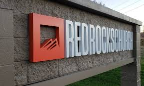
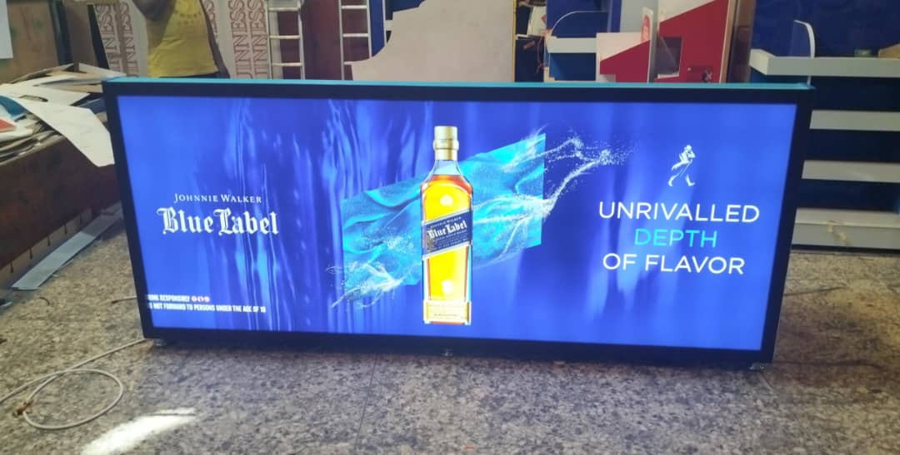
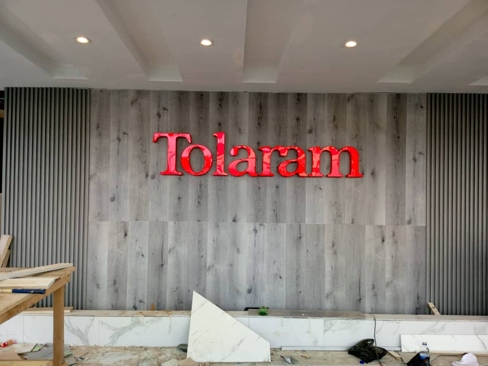
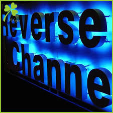
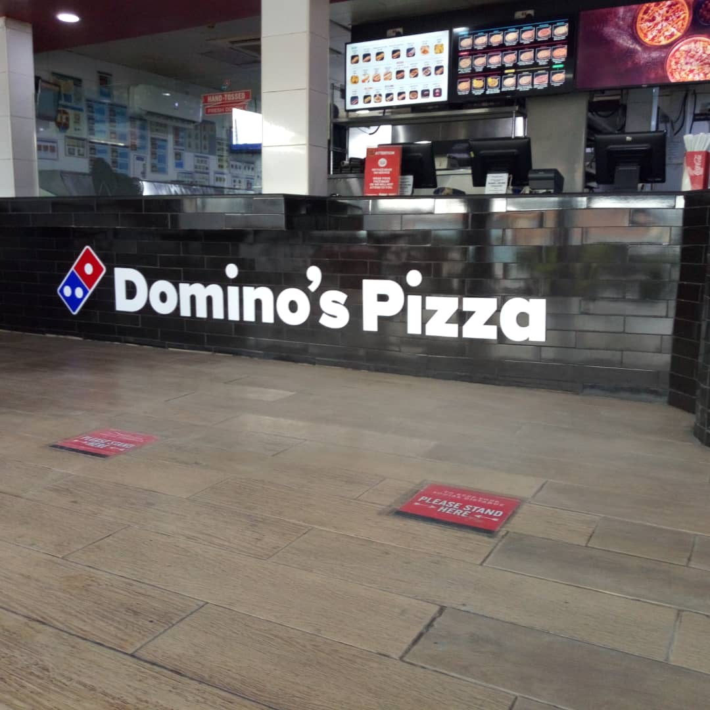
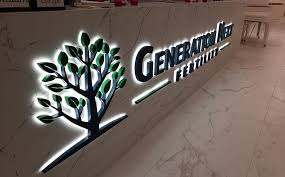
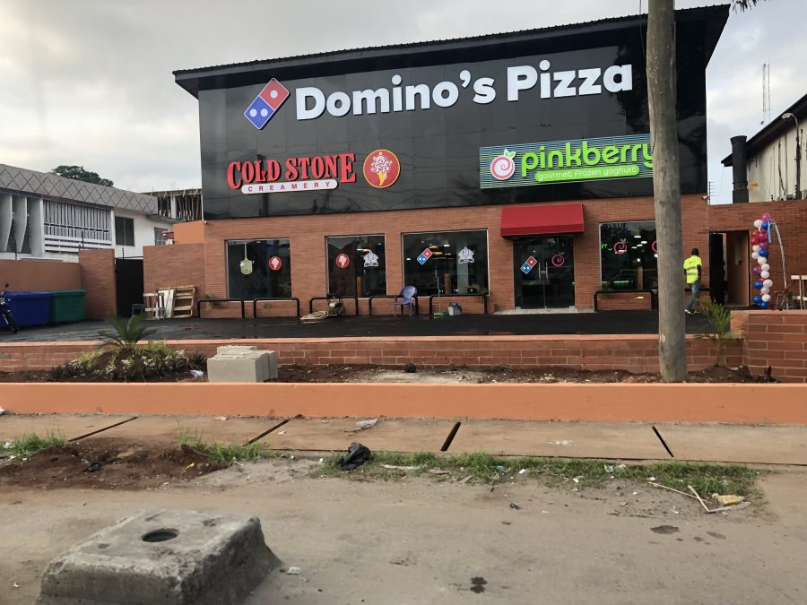

TMICPRODUCTION is your one-stop solution for all your illuminated signage needs. We specialize in creating eye-catching and captivating illuminated signs that will make your business stand out from the crowd. Our team of experienced designers and technicians will work closely with you to bring your vision to life, ensuring that your signage not only looks stunning but also effectively communicates your brand message to your target audience.
What sets TMICPRODUCTION apart is our commitment to using the latest technology and high-quality materials to produce signage that is not only visually appealing but also durable and long-lasting. Whether you are looking for LED signs, neon signs, backlit signs, or any other type of illuminated signage, we have the expertise to deliver outstanding results.
Our process begins with a consultation to understand your specific requirements and objectives. We then move on to the design phase, where our talented team will create a custom signage solution tailored to your brand. Once the design is approved, our skilled technicians will handle the installation process with precision and care, ensuring that your signage looks perfect in its intended location.
At TMICPRODUCTION, we understand the importance of effective marketing, and we believe that well-crafted illuminated signage can significantly impact your business's visibility and appeal. Whether you are a retail store, restaurant, hotel, or any other type of business, our signage solutions can help you attract more customers and create a memorable impression.
let TMICPRODUCTION be your partner in shining a light on your business. Contact us today to discuss how our illuminated signage can elevate your brand presence and drive your business forward.
      